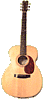
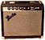

Articles en stock
Nous achetons, nous vendons. Et même, il nous arrive parfois de faire du courtage. Mais nous ne fournissons pas de nouveautés. A la place, notre stock comprend une large variété de guitares anciennes et de hautes qualités, amplificateurs et synthétiseurs d’effets. De plus, nous pouvons aussi assurer des révisions et des réparations de votre guitare ou votre amplificateur. Si vous chercher à faire remettre en état, rafraîchir, ou réparer votre instrument, vous êtes à la bonne place
Tous les instruments que vous pouvez trouver sur ce site sont actuels. Les prix sont sur demande. A l’aide du courriel, nous pourrons vous donner plus d’informations
 Haut de page ^
Guitares acoustiques
1927 Martin 0-28K (koa). 9.8 condition.
Changed long ago to spanish-style playing with a slanted saddle and normal height nut. Otherwise, it’s all-original and in great shape, even the old bar frets have plenty of wear left on them. Cette guitare possède un son clair et bien équilibré. C’est un instrument merveilleux pour jouer du “ragtime”. En outre, si vous pouvez prouver que vous êtes plus âgé que cette guitare, une remise de 5% en tant que “citoyen senior” vous sera offerte.
1930 Gibson L-0 (sunburst). 7.5 condition.
Well, this old pup was a rescue from the vintage guitar humane society. The top had been sanded down for a refinish, leaving the soundboard amazingly thin (but responsive), the braces were loose or broken, and it was in sad shape overall. Since then it’s been rebraced, refretted, had the fingerboard planed flat and the neck reset, and intonated with a compensated bone saddle. Now it’s one loud blues dog with an amazing, booming low-end response. It’s had a hard life and deserves a good home. Comes with license.
1950 Gibson J-45 (sunburst). 8.0 condition.
Another rescue from the pound. The original owner’s son used it for 3 years in an Industrial Goth band. One look at the pickwear, and you can see the result. The biggest problem with this guitar is that it needed and still needs a neck reset. Unfortunately, someone instead removed the original bridge and then replaced it with a new one at the wrong position to compensate for the intonation problems. However, the strings are still 1/4-inch off the fretboard at the 12th fret. To make this right, the neck needs to be reset and a bridge put back at the original position. In addition, there is some wear on the back, a broken section from the heel, a mended side crack, and a small top crack. However, it has a great big sound with a flatpick, and with these repairs, will be ready to roll.
1950’s plastic Maccaferri jazz guitar 9.8 condition.
Selmer Maccaferri produced a bunch of these guitars in both flattop and jazz versions. This is the jazz version. The neck pitch is adjustable, the neck is made out of rosewood-colored plastic, and there are position markers on both the front and back of the neck. A bunch of these guitars were left in a warehouse for decades and then unearthed a few years back. This one comes with the original shipping carton, instruction sheet, and strap. Too cool, too true.
1972 Guild G37 (natural). 9.0 condition.
This guitar has a nice maple arched back and a very good, clean sound. It is all original except for a pickup added under the bridge.
1994 Custom-made OM-28 style acoustic (natural). 9.9 condition.
This is simply a great finger-picking guitar. It has a 1-3/4” nut and a wider than average spacing at the saddle. It is warm, punchy, and balanced. Besides being fun to play, turn it over to see some of the wildest brazillian rosewood you’re likely to encounter.

Guitares électriques
1977 Gibson ES-175 (natural). 9.8 condition.
All original. Do you want to sound like Joe Pass? Take lessons. But if you want a really nice jazz guitar for a reasonable price, while you’re taking those lessons, then consider this instrument. This guitar differs from other ES-175s in that it has higher-output pickups and a maple neck instead of mahogany. This guitar has excellent low action, a nicely shaped neck, and above all, great jazz sound.
1981 Gibson ES-347 (natural). 9.8 condition.
All original except for a bone nut instead of the original brass. This is a great guitar for anyone wanting to cover the range from blues to jazz to fusion. And did we mention it’s blonde?
1956 Fender Stratocaster (sunburst). 8.5 condition.
This is what I’d call a parts Stratocaster. According to what we were told, it was originally put together out of the body and neck of a ‘56 Stratocaster, and the electronics /pickguard assembly of a late-’50s model that was hanging on the wall. The original date markings and neck plate are gone, but it includes a set of pre-CBS tuners. This guitar has an old refinish that’s aged nicely, and the best V neck we’ve ever played. The pickups are real loud and chimey, too.
1963 Fender Stratocaster (sunburst). 8.5 Condition.
Another parts guitar. This one has a more recent refinish and no body marking, though the neck date is still there. The wood and bridge assembly are original, everything else is a vintage-style replacement. This has an excellent neck, and can let you do that authentic Texas-blues thang for a reasonable price.
1995 Fender Stratocaster Custom Shop American Classic (blonde). 10 condition.
Our next model sports a lightly figured birdseye maple neck, a beautiful two-piece ash body, and is covered in that oh-so-appealing Mary Kaye blonde finish. Top it off with a tortoise-shell pickguard, gold hardware, and you’re ready to go
1996 Fender Stratocaster ‘57 Vintage Reissue (sunburst). 10 condition.
This next minty model has just a few hours of playing time on it. Sounds great, plays fine, and best of all, where the original in this condition would cost you the best part of a year’s take-home pay, this one is only going to set you back a couple of weeks' pay. (Unless you’re like me, in which case this guitar is still the best part of a year’s take-home pay.)
1966 Fender Telecaster (blonde). 9.0 condition.
This guitar has been refinished to a sort of cross between butterscotch and Mary Kaye blonde. Other than that, everything else seems to be original. The guitar’s neck is narrower at the nut than most, giving it an almost violin-like feel at times. Very warm sounding and very lightweight.
1996 Fender Telecaster ‘52 Vintage Reissue (butterscotch). 9.8 condition.
Why not a perfect 10? Because, after hanging high on the wall of a store for a few weeks in pristine condition, someone who tried this guitar missed replacing it in its hanger by a few millimeters. The bad news is a fingernail-sized chip on the front and one slightly bent tuning peg. The good news is, this testament to indestructability of Fender guitars will now cost you a third less than last week.
 Haut de page ^
Amplificateur de guitares
1940’s Oahu “Leilani” practice amp 8.5 condition.
This is a sweet little harp, lap steel, or practice amp covered in a burgundy mother-of-toilet-seat finish. Even though it’s almost worth buying just to look at, it sounds good, too.
1966 Fender Deluxe Reverb 9.8 condition.
All-original and includes the footswitch. No tears in the grill or tolex, and this amp just sounds terrific no matter what you do. Well, that is, assuming you know how to play the electric guitar in the first place. This is one of the all-time great amps.
1978 Fender Pro Reverb 9.8 condition.
Completely original, except for one speaker that was replaced by the company a month after the owner purchased the amp. This has the pull-boost, master volume control, and 70 watts of mighty, mighty reverb-drenched tone.
1981 Fender Princeton Reverb 10.0 condition.
This is a fine amp with both tremelo and reverb. And hey, it even has the footswitch and cover.
1983 Fender Super Champ 9.5 condition.
This is a wonderful little amp: a 10-inch speaker, approximately 20 watts, reverb, and two channels all packed into a box the size of a Champ. This is the one you can play around the apartment and still use at bar gigs. Includes the footswitch.
Pédales à effets
2-band parametric equalizer Fits in your pocket and fixes your sound for pocket change.
Boss 20-band graphic equalizer All the tone tweaking you can handle in a two-rack unit.
Boss Enhancer Brings reality back into your sound.
Electro-Harmonix Small Stone Phase Shifter Original, block logo. More swirl than your mom’s mocha milkshakes.
Hughes & Kettner Blues Machine Use this as a preamp, rack-units effect, a standalone head for a practice amp, or any other way you choose. Great tube sound.
Ibanez digital Rock n’ Play This handy little device lets you you record a lick digitally, slow it down, and replay it as often as you want. Or at least until you learn to how play the lick yourself.
Korg Pandora Plug your guitar into this, hook it up to your headphones, and jam on without making any external noise. Your neighbors will thank you. In fact, they may even buy it for you.
MXR Distortion + Original block logo. Ah yes, the sound of the eighties.
MXR Phase 100 Original block logo. Woosh, woosh. What is that burbling sound? Just you and your phaser. This is the original, with the block logo.
Morley ABC box Switch one guitar between three amps or three guitars between one amp.
Nady AX-1000 This tiny wireless remote plugs into your guitar and turns your FM radio into an amplifier. Astound your friends and mystify next-door neighbors who tune to the low end of their FM dial.
Peavey compression pedal Clean up your country licks.
Scholz Rockman Power Soak Plug this into the back of your big old amp to keep the volume down and the neighbors from your door.
Scholz Rockman X100 A great way to get the sound of you-know-who in a box.
Scholz Sustainor Clean or overdriven sustain for days. Well, OK maybe not days, but a whole lotta seconds.
Tech-21 TriO.D A variety of different amp sounds from one small box and one button.
Turbo Rat In addition to the sound this pedal makes, we just like the name. Plus, it glows in the dark.
Vox Valve Tone This looks so cool, you could use it just for its stage-presence, but it sounds great, too.
Vox Distortion Booster The distorted twin brother of the Vox Valve Tone.